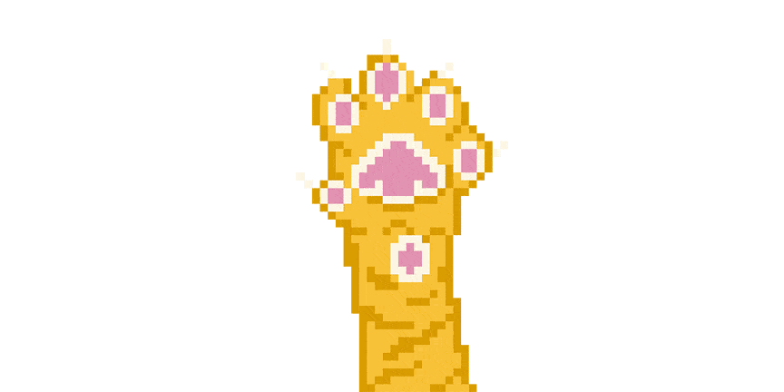
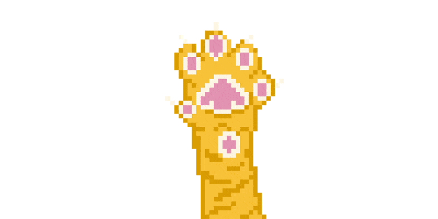
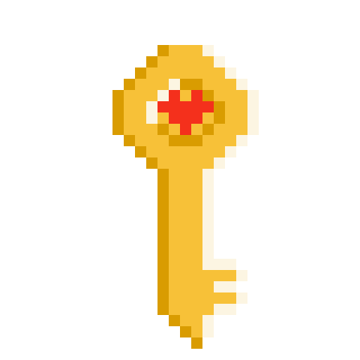
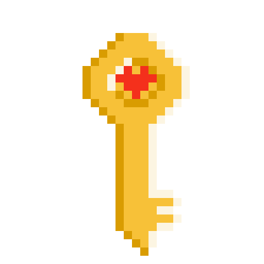

Group
Powell Nguyen
Tools
Procreate, Piskel, Unity
Timeline
March - May, 2023
Brief
Through this game, our team seeks to bring attention to the hardship of sheltered animals. Cats and dogs that are not adopted quickly would often be euthanized. Older animals, black cats, and pit bulls usually have the lowest adoption rates. The game mechanic reflects the challenges these animals face by making it more difficult to jump or decreasing the timing required to accomplish tasks. The character designs are adorable and colorful to evoke a feeling of lightheartedness and fun to sharply contrast with the harsh reality confronting sheltered animals.To play the game CLICK HERE
The process of creating the game includes

Brainstorming
My partner and I brainstormed together to come up with ideas, themes, and types of game we want to create. We were both inspired by Super Mario and love our pets. Therefore, we decided to create a 2D platformer game with a pet theme but also have an impactful message.
Analysis
I did some research to find our target audience. According to a Petfood Industry's survey, Millenials and Gen Z are the groups that are most likely to adopt pets.
Therefore, I decided that our target audience will be young professionals who are active, single, and value their emotional well-being.
This group is more likely to adopt pets to help reduce their stress level and spend time with their animal companions.
After selecting the target audience, the color scheme and art style were decided.
Design


 



 
